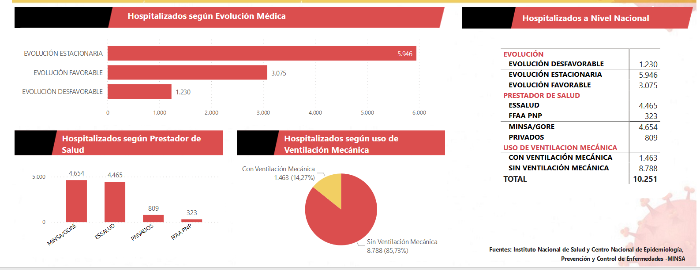

Impacto económico
El covid-19 no solo ha tenido un impacto en la salud de las personas, si no también en la economía nacional. Distintos campos de la economía peruana se han visto afectados, algunos más que otros, a continuación revisaremos el estado de diferentes sectores.
- Agropecuaria
- Pesca
- Minería
Las actividades de este sector no fueron detenidas en ningún momento para poder garantizar el normal abastecimiento de alimentos a todo el país. Cifras dadas por el Ministerio de Agricultura (MINAGRI), el abastecimiento de alimentos a mercados mayoristas diariamente se mantuvo en 9 mil toneladas aproximadamente. Los envíos agrícolas al mercado externo en mayo se vieron reducidos en un 1,2% en comparación al mayo del anterior año. La ayuda financiera a este sector va dirigida a asegurar un desempeño bueno en la próxima campaña agrícola, para ello el gobierno implementó el Fondo de Apoyo Empresarial (FAE) agrícola, que busca inyectar 2000 millones al sector a través de créditos dirigidos a pequeños agricultores. Las actividades complementarias del agro se han visto liberadas con la tercera fase de la re-activación económica.
Así como el agro, la pesca fue un sector que cuyas actividades no fueron restringidas; sin embargo, debido a la alta taza de contagios en los pescadores artesanales, la pesca de consumo directo se redujo en un 27% en marzo y 53% en abril en comparación a los mismos meses del año pasado. Como resultado de las coordinaciones con el Ministerio de producción, la captura industrial fue liberada con la fase 1 de la re-activación económica, empero solo se autorizó el despliegue del 60% de la flota de las empresas. Cabe señalar que funcionarios del sector estimaron que entre el 20%-30% del personal de las empresas pertenecen a la los grupos de riesgo, por lo cual estuvieron impedidos de trabajar. El Fondo Nacional de Desarrollo Pesquero (FONDEPES) creó un programa de crédito como ayuda a los pescadores artesanales, otorgándoles hasta un máximo de 2.000 soles en un máximo de 36 cuotas mensuales y con un bajo interés.
La actividad minera se vio fuertemente afectada debido a la cuarentena y las restricciones tomadas, las cuales resultaron en la paralización temporal de ciertas unidades mineras. El sub-sector minero-metálico tuvo la mayor caída de producción en su historia con un 23% en marzo y 47% en abril. Por otro lado, la producción de hierro y estaño fue nula en abril. La inversión en minería entre los meses de enero y mayo cayeron en un 25% respecto al mismo periodo en el 2019. Así mismo, el Banco Central de Reserva del Perú (BCRP) proyecta una caída de 31.3% en el año.
Impacto social
La moralización de las prácticas de mitigación de COVID-19, combinada con la relajación de las regulaciones, puede tener consecuencias no deseadas importantes que afectan la capacidad de las personas para mantener las prácticas y la cohesión social
Una posibilidad es que conduzca de forma permanente a un aumento de la incidencia del trabajo desde casa y también acelere y mantenga considerablemente el mayor uso de Internet. Este mayor uso puede anticiparse, por ejemplo, para conferencias, seminarios, reuniones, aprendizaje en línea (por ejemplo, a través de Zoom y Webinair), contactos sociales, comercio económico y transacciones financieras.[1]
- Violencia.
- Educación
- Trabajo
- Difusión de información
Ante la crisis de salud mundial a causa del COVID-19, se han implementado medidas de salud pública para la mitigación de la pandemia tales como: Cuarentena y Medidas de distanciamiento social: incluyen medidas en la comunidad para reducir el contacto entre la población como por ejemplo , la restricción de viajes, medidas en el entorno escolar, laboral y comunitario. La aplicación de estas medidas tienen como objetivo retrasar el momento de máxima incidencia y reducir el número total de casos de infectados. Sin embargo, tal como se ha venido alertando en medios de comunicación y a través de las líneas de emergencia de diferentes países, estas estrategias de mitigación han logrado visibilizar un incremento de casos de violencia familiar a nivel global, donde además, las principales víctimas son las mujeres y los menores de edad, los cuales ante una situación de cuarentena con sus perpretadores están expuestos a permanentes abusos físicos y psicológicos. Más aún, la situación de emergencia sanitaria dificulta la posibilidad de encontrar espacios de apoyo fuera del hogar, colocando a esta población en escenarios significativamente riesgosos[2].
Según la Organización de las Naciones Unidas para la Educación, la Ciencia y la Cultura (UNESCO, 2020) la cantidad de estudiantes afectados por la pandemia en el Perú han sido 9,911 millones en los diferentes niveles de educación, desde inicial hasta el superior, como se indica en la Figura 4, lo que haría suponer que los problemas sociales se profundizan por la pérdida del empleo y la dificultad de elevar sus niveles de formación en búsqueda de oportunidades.[3]
El COVID-19 ha mostrado impactos sociales originando que muchas personas pierdan su empleo, ejemplo de ello es que en Lima Metropolitana para el trimestre de febrero a abril de 2020, de acuerdo al INEI (2020) se indica que el 25% de personas en edad de trabajar han perdido su puesto laboral, pasando de 4,872 millones a 3,655 millones con respecto a la última comparación anual para el trimestre de febrero a abril, considerando un total de población en edad laboral que varía de 7.8 a 7.9 millones.[3]
La epidemia de COVID-19 ha generado una “infodemia”, con información excesiva e infundada que dificulta una adecuada respuesta de salud pública. Esta perspectiva describe una selección de noticias falsas de COVID-19 que se originaron en Perú y la respuesta del gobierno a esta información. A diferencia de otros países, Perú tuvo relativamente éxito en el control de la infodemia posiblemente debido a la implementación de penas de prisión para las personas que crearon y compartieron noticias falsas. Creemos que acciones similares de otros países en colaboración con empresas de redes sociales pueden ofrecer una solución al problema de la infodemia.[4]
Impacto sanitario
Específicamente en lo referente a sector sanitario, el mundo ha tenido que implementar medidas para el confinamiento y evitar así la propagación del virus .[6] En el Perú se implemento equipos biomédicos los hospitales para atender a pacientes covid[7] A inicios de la cuarenta la presidenta ejecutiva de EsSalud, Fiorella Molinelli, mencionó: “En el caso de la seguridad social teníamos una brecha de cuatro mil (4000) camas, nueve mil (9000) enfermeras, cinco mil (5000) médicos y S/ 32 000 000 000 en infraestructura. Iniciamos con ciento veintidós (122) camas UCI y hoy con mucho esfuerzo tenemos cuatrocientas cuarentaiún (441), prácticamente hemos triplicado”.[8] Sin embargo a pesar de todas estas medidas para reducir el numero de contagiados muchos hospitales del territorio nacional los hospitales colapsaron.[9]
Por otro lado la Paralización de servicios de salud relacionado con enfermedades no transmisibles ha afectado a millones de personas. La OMS señala: Más de la mitad (53%) de los países encuestados han interrumpido parcial o totalmente los servicios de tratamiento de la hipertensión; el 49% los servicios de tratamiento de la diabetes y las complicaciones conexas; el 42% los servicios de tratamiento del cáncer, y el 31% los de emergencias cardiovasculares. Los servicios de rehabilitación se han visto interrumpidos en casi dos tercios (63%) de los países, a pesar de que la rehabilitación es clave para una recuperación saludable de los pacientes gravemente enfermos de COVID-19. Cabe resaltar que las enfermedades no transmisibles matan a 41 millones de personas cada año, lo que equivale al 71% de todas las muertes a nivel mundial.[10]
- Salud mental
Según un informe de Nature, se publicaron numerosos artículos académicos sobre la COVID-19 desde el inicio de la pandemia. La gran mayoría de ellos se enfocaban en las características clínicas y epidemiológicas de la enfermedad, la caracterización genómica del virus y las políticas de salud pública para enfrentar la pandemia. Sin embargo, a pesar de la relevancia de los problemas de salud mental durante las pandemias, era poca la información disponible en el contexto de la COVID-19 [1]. Inicialmente el brote del SARS‐CoV‐2 en China causó alarma y estrés en la población general. El miedo a la enfermedad se podría explicar por la novedad e incertidumbre que genera. El creciente número de pacientes y casos sospechosos suscitaron la preocupación del público por infectarse. El miedo se exacerbó por los mitos y por la desinformación en las redes sociales y medios de comunicación, a menudo impulsado por noticias erróneas y por la mala comprensión de los mensajes relacionados al cuidado de la salud. [1] El impacto psicológico en la población general tiene consecuencias en la salud física y mental, que podrían estar caracterizadas por incertidumbre, insomnio, ira, temor a ser infectado, aumento del consumo de alcohol o de cigarrillos, aislamiento social, desarrollo del trastorno de estrés post traumático, trastornos de ansiedad, trastorno depresivo, somatización y la percepción de la pérdida de la salud. [2] Este impacto está relacionado con la salud mental, pues existen también las personas que guardaron confinamiento y ya padecían problemas mentales previos. Actualmente, en el Perú contamos con cuatro instrumentos de detección de problemas de salud mental disponibles para su uso en la población como son la versión peruana del PHQ-9 para el diagnóstico de depresión, la versión en español de la Escala de Depresión del Centro de Estudios Epidemiológicos (CES-D), las versiones cortas de la Escala de Psicopatología Depresiva (EPD-4 y EPD-6) y la Escala de Ansiedad de Lima de 20 ítems (EAL-20) [2]. Además, se cuenta con un miedo a la escala COVID-19. El FCV-19S es una escala unidimensional novedosa de siete ítems con buenas propiedades psicométricas que se utiliza para evaluar los temores al COVID-19 entre la población general. Todos los ítems se califican en una escala de 5 puntos, que van de 1 (muy en desacuerdo) a 5 (muy de acuerdo). Las puntuaciones totales van de 7 a 35. Cuanto más alta es la puntuación, mayor es el miedo al COVID-19. Los ítems del FCV-19S se construyeron sobre la base de una revisión exhaustiva de las escalas de miedo existentes y muestra una correlación ítem-total aceptable.[3] Se realizó una encuesta para ver la escala de factores asociados al fatalismo ante la COVID-19 en 20 ciudades del Perú en marzo 2020. De los 2466 encuestados el 86 % percibían que infectarían a sus familiares y amigos (36 % y 46 % estaban muy de acuerdo y de acuerdo, respectivamente), el 76 % percibían que se infectarían en el trabajo o centro de estudios (30 % y 46 % estaban muy de acuerdo y de acuerdo, respectivamente) y el 64 % pensó que tendrían una complicación (24 % y 40 % estaban muy de acuerdo y de acuerdo, respectivamente). Además, fueron altos los porcentajes de los que estaban muy de acuerdo o de acuerdo con que se deprimirían (36 %), que podrían fallecer (26 %), que esto es evidencia de que se acerca el fin del mundo (17 %) o que podrían tomar una decisión fatal (9 %). (Figura 2).
Hallamos que gran cantidad de personas pensaban que podrían fallecer, que esto es evidencia de que se acerca el fin del mundo o que podrían tomar una decisión fatal (uno de cada cuatro, de cada cinco o de cada diez; respectivamente). Estas percepciones muestran que un gran porcentaje de la población tiene mucho miedo y que podrían pensar en desenlaces fatales, por lo que, en pandemias como esta se debe brindar mucha información a la población, por medios confiables y entendibles; con el fin de propagar información correcta que evite el pánico. Se concluye que los factores asociados a una actitud fatalista en la pandemia del COVID-19 en el Perú son ser mujer, tener mayor edad, ser paciente de riesgo y pertenecer a una religión; en contraste, los ateos y agnósticos tuvieron una menor percepción de fatalismo. [4] También recordemos que como en todos los aspectos relacionados con la salud, las marcadas diferencias de recursos financieros y humanos disponibles en diferentes países afecta la manera en la que se encaran las cuestiones de salud mental. [5] Pues numerosas familias se han visto gravemente afectadas al no contar con un sustento económico estable para poder sobrellevar la cuarentena, lo cual genera más preocupaciones en su día a día.

Fuente:Covid 19 en el Perú - Ministerio del Salud
Fuente:Covid 19 en el Perú - Ministerio del Salud

Impacto tecnológico
La rápida expansión de la COVID-19 ha hecho saltar todas las alarmas sanitarias a nivel mundial, no por sus índices de letalidad, sino por la abrumadora capacidad de transmisión y contagio. A este último hecho, se añade una cuestión que pone en aprietos a la comunidad médica, y es que este virus puede estar presente en personas totalmente asintomáticas, las cuales son portadoras del mismo y pueden transmitirlo al resto de la población. Ello conlleva una mayor dificultad a la hora de frenar su propagación. [1] Debido a todo ello, la innovación tecnológica en la creación de nuevos dispositivos o plataformas han sido de gran ayuda para combatir este virus. Numerosas organizaciones, universidades y emprendimientos dieron a conocer sus propuestas de solución para las distintas problemáticas generadas por esta pandemia.
Los equipos tecnológicos y biomédicos fueron sumamente útiles para los médicos y personal de salud, y de gran necesidad para los pacientes que los requerían; este es el caso de los ventiladores mecánicos, los cuales fueron muy escasos y pocos tuvieron la oportunidad de acceder a ellos. Además, estos equipos biomédicos pueden ser de alta o baja complejidad y abarcan desde las camas eléctricas, bombas de infusión, ventiladores de respiración asistida, equipos portátiles de imageología, monitores multiparámetro o de signos vitales, ultrasonido para realizar tomografías torácicas y oxímetros, hasta los equipos especiales de ventilación para dotar las habitaciones o salas de aislamiento con sistemas de presión negativa. [2]
En Perú En Perú,la app CoronaISH, desarrollada por el Gobierno Regional de San Martín, realiza un tamizaje mediante un cuestionario y permite al personal médico comunicarse con casos probables para coordinar su autoaislamiento. Otra iniciativa fue la appTamizate contra el Covid-19 desarrollada por un grupo de Informática Biomédica de la Universidad Peruana Cayetano Heredia, esta app permite una autoevaluación, clasifica en nivel de riesgo (según esto brinda recomendaciones), y los conduce a los canales de atención del Ministerio de Salud del Perú. A inicios de abril (3 de abril 2020) la secretaría de gobierno digital lanzó la app Perú en tus manos,que permite la autoevaluación, visualización de mapa de calor, rastreo de posibles contagiados y actualización de información.[3] También, la Pontificia Universidad Católica del Perú y la Universidad Peruana Cayetano Heredia implementaron un sistema de ventilación no invasiva para pacientes de COVID-19 en etapa intermedia, tiene un costo accesible porque fueron adaptados de máscaras de buceo. El equipo de personas involucradas en este proyecto está conformado por el Dr. Luis Vilcahuamán, ingeniero biomédico y coordinador del GBI; la Dra. Nilia Abad, médico intensivista en el Hospital Rebagliati y magíster en Ingeniería Biomédica por la PUCP; el Dr. Michael Cieza, médico y docente de la UPCH; la Ing. Julissa Venancio, estudiante de la Maestría en Ingeniería Biomédica; y el Dr. Enrique Durand, jefe de la UCI del Hospital Almenara.[3]
"El sistema permite hacer una terapia respiratoria en pacientes medianamente críticos. El objetivo es que el paciente se estabilice y no necesite usar un ventilador pulmonar". Dr. Luis Vilcahuamán Ing. biomédico y coordinador del GBI
- Otros países: Aplicaciones móviles y Chatbots: La tecnología al servicio de la telemedicina
- En España, estas son algunas de las apps más destacadas:
- El Big Data acelera la investigación contra el coronavirus
La telemedicina es fundamental para evitar el colapso en los hospitales, y el diagnóstico y tratamiento de la COVID-19 pueden convertirse en procesos rápidos y sencillos en los que el paciente solo tiene que abrir una aplicación, detallar sus síntomas y esperar a que un médico le atienda a través de una consulta virtual. La estimación que se disponía antes de la actual crisis del coronavirus era que alrededor de un 70% de las visitas médicas programadas podrían realizarse de forma telemática, y que la industria debía crecer en los próximos cinco años un promedio del 27% sólo en estados Unidos. Con la llegada de la COVID-19 los esfuerzos en tecnología, sin duda se han acelerado aún más. Las aplicaciones móviles, los gadgets y los chats inteligentes no podían faltar en esta selección de la aplicación de la tecnología para hacer frente al coronavirus, a través de funciones de pre-diagnóstico, descongestionando las vías telefónicas habilitadas para personas posiblemente contagiadas, y midiendo resultados. China y Corea del Sur ha sido los principales promotores del uso de las apps para controlar la pandemia. A través de portales web especializados y plataformas digitales como Alipay y Wechat, las autoridades chinas han conseguido evitar desplazamientos a los centros de salud y, por tanto, nuevos contagios [1]
“[Asistencia COVID-19]” Es la app del Gobierno de España para ayudar a gestionar la pandemia. Su objetivo es facilitar el autodiagnóstico y descongestionar los teléfonos de atención sanitaria de las diferentes comunidades autónomas. Además, los datos que proporciona permitirá disponer de datos unificados y favorecer la gestión a nivel nacional “[CoronaMadrid]” que pretende llegar al mayor número de usuarios y establecer estadísticas concretas de la incidencia y evolución de la COVID-19. “[Stop COVID-19]” Cataluña fue la primera Comunidad Autónoma en apostar por el desarrollo de una app. La particularidad de esta es que requiere el número de la tarjeta sanitaria para su acceso, por lo que los datos se encuentran conectados con el historial clínico de cada persona. “[COVID-19.eus]” es la app desarrollada en el País Vasco, con un triple objetivo: prevenir el contagio actuando como una red social, donde los usuarios podrán añadir a familiares y amigos y la app les irá preguntando sobre su estado de salud; establecer un control y seguimiento de los contagiados, y ser utilizada como una herramienta epidemiológica, detectando las áreas con más casos, y aquellas con más curaciones. [1]
Un equipo de investigadores del Laboratorio Nacional de Oak Ridge, en Estados Unidos, está utilizando Summit, [el ordenador más potente del mundo, para ayudar en la lucha contra la COVID-19] La gran capacidad de procesamiento de datos que tiene este super ordenador desarrollado por IBM, ha permitido simular 8.000 compuestos de medicamentos en dos días, 77 de los cuales muestran cierto potencial para evitar que la COVID-19 infecte las células. Por su parte, la organización Nextrain ofrece datos, mapas y visualizaciones en código abierto y en tiempo real para comprender el árbol genealógico del virus.[1] En las aplicaciones robóticas también han desempeñado un papel importante desde la aparición del COVID-19. En Bélgica, robots de asistencia Zorabots para atención de personas de la tercera edad han sido adaptados para la situación de aislamiento, actuando como compañía, y funcionando como monitoreo y medio de comunicación con los familiares del paciente(46). De la misma manera, el robot humanoide Cloud Ginger XR-1ofrece información útil y la interacción y entretenimiento necesario durante periodos de cuarentena,dónde el contacto humano es escaso. [4] Robo-drones tuvieron un papel crucial en China y España, monitoreando personas durante las campañas de cuarentena(48). Por otro lado, un autómata de control remoto asistió a la desinfección de las calles y regiones de China(49). Asimismo, Smart Transportation Robot tuvo como objetivo portar alimentos y medicamentos a los pacientes desde proveedores de atención médica sin contacto de persona a persona(50). Finalmente, XENEX DesinfectionServices puso a disposición robots que usan xenón activado, los cuales crean flashes intensos de luz UV germicida para desinfectar habitaciones ocupadas previamente por pacientes con coronavirus(51). [4]
Bibliografía
- 1.Tisdell C. Economic, social and political issues raised by the COVID-19 pandemic [Internet]. ncbi. 2020 [cited 16 September 2020]. Available from: https://www.ncbi.nlm.nih.gov/pmc/articles/PMC7440080/
- 2.Essalud. VIOLENCIA DE GÉNERO/FAMILIAR EN TIEMPOS DE CUARENTENA: REVISIÓN CRÍTICA DE LA LITERATURA.[internet].2020 http://www.essalud.gob.pe/ietsi/pdfs/direcc_invest_salud/RRI_08_2020.pdf
- 3.Ortiz L, Roca C. Impacto del COVID-19 en los problemas sociales en contextos Urbanos y Rurales del Perú [Internet]. Centrumthink.pucp.edu.pe. 2020 [cited 13 September 2020]. Available from: https://centrumthink.pucp.edu.pe/impacto-del-covid-19-en-los-problemas-sociales-en-contextos-urbanos-y-rurales-del-peru
- 4.pulido c, ruiz l. A New Application of Social Impact in Social Media for Overcoming Fake News in Health [Internet]. ncbi. 2020 [cited 16 September 2020]. Available from: https://www.ncbi.nlm.nih.gov/pmc/articles/PMC7440080/
- 5.
- referencia
- referencia
- referencia
- referencia
- referencia
- referencia
- referencia
- referencia
- referencia
- referencia
- referencia
- referencia
- referencia
- referencia
- referencia
- referencia